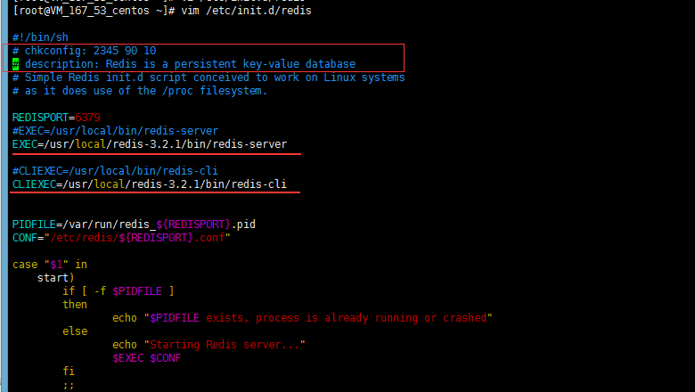
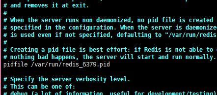

Centos 安装redis 并配置服务
1.下载源码包
# 安装gcc依赖 |
可能报错一
zmalloc.h:50:31: error: jemalloc/jemalloc.h: No such file or directory
zmalloc.h:55:2: error: #error “Newer version of jemalloc required”
make[1]: * [adlist.o] Error 1
make[1]: Leaving directory `/data0/src/redis-2.6.2/src’
make: * [all] Error 2
可以改成
make MALLOC=libc PREFIX=/usr/local/redis install
ll /usr/local/redis/bin
可以报错二
cc: error: ../deps/hiredis/libhiredis.a: No such file or directory |
解决方法：
- 进入源码包目录下的
deps目录中执行: make lua hiredis linenoise
2、添加服务
a)、这个是centos6 的service 命令
1、创建服务脚本
cp /opt/redis-4.0.14/utils/redis_init_script /etc/rc.d/init.d/redis |

前面两行注释是：redis服务必须在运行级2，3，4，5下被启动或关闭，启动的优先级是90，关闭的优先级是10。
2、修改配置文件
vim /etc/redis/6379.conf |
把daemnize no改为yes，意思是后台运行
3、添加服务
chkconfig --add redis #如果没报错的话，说明成功，可以用 |
b)、这个是centos 7 的systemctl 命令
使用systemctl 命令之前先来说说 systemctl脚本的配置
位置：/lib/systemd/system/
[Unit] |
1、创建redis 脚本
vim /lib/systemd/system/redis.service |
2、编辑内容
[Unit] |
先说明一下啊，上面的：
PIDFile 这个值要和 上面配置脚本中的 ExecStart命令启动 redis 的配置文件（/etc/redis/6379.conf）里的pidfile 一样，比如下图：

ExecStart 前面是redis启动的服务脚本 空格 之后是启动需要的配置文件路径
3、重载系统服务
systemctl daemon-reload |
4、启动redis 服务
systemctl start redis.service |
5、开机自启动 (可选)
systemctl enable redis.service |
### 结束，配置不成功，评论说明，不出意外 ３分钟之内回复